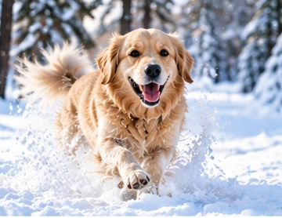
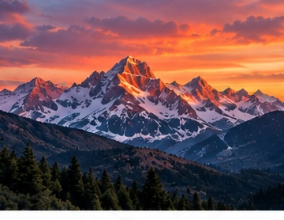
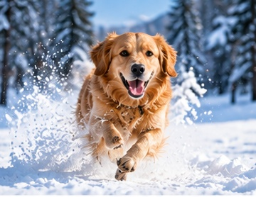
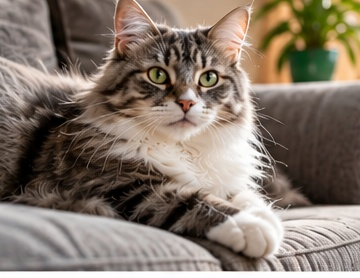
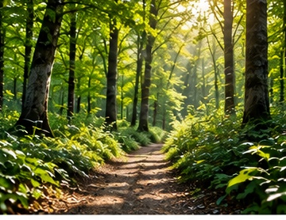
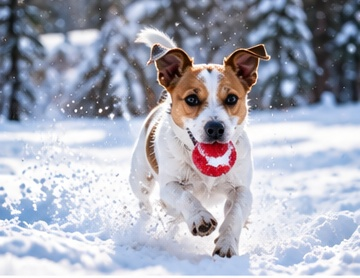
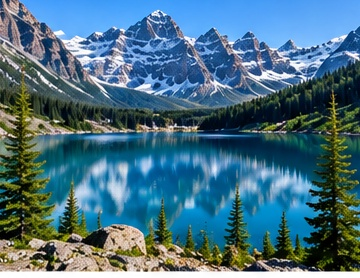
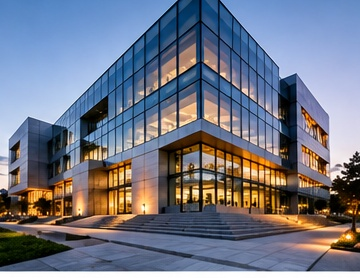
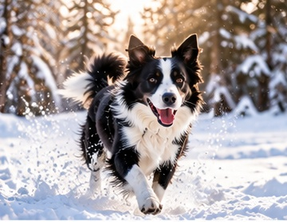

matchdog-snow-01.jpgdog · snow · outdoors
Index your own images, convert them into embeddings with CLIP, store the vectors and metadata in Qdrant, then search your files by meaning instead of filename.

match
match
match
match
match
match
match
match
matchWebsite demo: the gallery uses local descriptive tags so the static HTML can demonstrate the interface. In the actual Python project there are no hand-written tags: CLIP creates the vectors and Qdrant performs the real vector-database search.
A normal database is great at exact values: IDs, names, dates, categories. A vector database is designed to store high-dimensional vectors and retrieve the vectors that are mathematically closest to a query. That makes similarity and semantic search possible.
CLIP converts an image or text query into an embedding: a vector whose position represents learned semantic information.
Qdrant stores each vector as a point together with an ID and payload metadata, then retrieves nearest points using a similarity metric.
The database does not understand pixels directly. We first run the image through CLIP's image encoder. The result is a fixed-length list of floating-point numbers.
The displayed values are illustrative. The real model produces a high-dimensional embedding.
Individual dimensions are not labels like “dog” or “snow.” Meaning is distributed across the whole vector. What matters for search is how vectors relate to one another.
This is a conceptual 2D projection. Real embedding spaces have many dimensions.
In Qdrant, a stored item is a point. A point can contain an ID, a vector, and a payload. The payload is ordinary metadata that lets your application map the numerical vector back to the real file and filter results later.
A similarity-search index focuses primarily on nearest-neighbor lookup. You often maintain metadata and persistence separately.
vector → nearest IDsQdrant manages collections of points containing vectors and payload, persists them, supports updates/deletes, filtering and vector queries through a database API.
ID + vector + payload → queryFor the image collection, we create a Qdrant collection whose vector size matches the CLIP embedding dimension and choose cosine distance for similarity.
from qdrant_client import QdrantClient, models client = QdrantClient(path="./qdrant_data") client.create_collection( collection_name="images", vectors_config=models.VectorParams( size=embedding_dimension, distance=models.Distance.COSINE, ), )
For a tutorial, Qdrant's Python client can run with local on-disk storage. You can later switch to a Qdrant server without changing the core vector-search concept.
# Turn image pixels into a vector embedding = clip_model.encode(image).tolist() # Store the vector AND useful metadata in the vector database client.upsert( collection_name="images", points=[ models.PointStruct( id=point_id, vector=embedding, payload={ "path": str(image_path), "filename": image_path.name, "type": "image", }, ) ], )
CLIP was trained so its text and image representations can be compared. The text query is encoded into the same shared embedding space as the indexed images.
images collection have vectors most similar to this query vector?results = client.query_points(
collection_name="images",
query=query_embedding.tolist(),
limit=5,
).points
for point in results:
print(point.score, point.payload["path"])With cosine distance configured for the collection, Qdrant ranks points according to vector similarity. Conceptually, vectors pointing in similar directions receive stronger similarity.
Bars are conceptual, not claimed scores from these specific photographs.
Store high-dimensional embeddings as first-class database data.
Retrieve nearest vectors instead of only exact-value matches.
Keep filenames, paths, types and other application data with each point.
Combine vector similarity with metadata constraints as the project grows.
Add, update and delete points instead of rebuilding a standalone array by hand.
Run locally for the tutorial, then connect to a Qdrant service using the same model.
If you search for something that is not represented in your collection, the database can still return the nearest vectors. A nearest-neighbor query answers “what is closest among what I have?”, not “does an objectively correct match exist?”
“Give me the 5 nearest points.” Even weak matches may appear because the database is required to rank something.
limit=5For some applications you can reject results below a calibrated similarity threshold so poor matches are not presented as valid.
score_threshold=...# CLIP's job: representation image_vector = clip.encode(image) query_vector = clip.encode("dog playing in snow") # Qdrant's job: database storage + similarity retrieval client.upsert(collection_name="images", points=[...]) matches = client.query_points( collection_name="images", query=query_vector.tolist(), limit=5, ).points
Use the Qdrant Python client with local persistent storage for the simplest laptop demo. No separate database server is required for that version.
pip install sentence-transformers qdrant-client pillow numpy tqdm
python local_search.py index-images /path/to/photos
python local_search.py search-images "dog playing in snow" --limit 5docker pull qdrant/qdrant docker run -p 6333:6333 -p 6334:6334 \ -v "$(pwd)/qdrant_storage:/qdrant/storage:z" \ qdrant/qdrant
local-vector-search/
├── local_search.py
├── index.html
├── demo-images/
│ ├── dog-snow-01.jpg
│ ├── red-sports-car.jpg
│ └── ...
└── qdrant_data/ # persistent vector database data
Your photo folder can live anywhere on the laptop.
The Qdrant payload stores the path back to each original file.